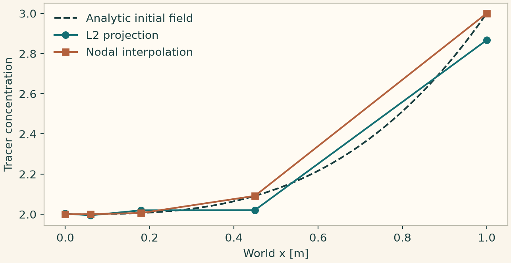

Docs › Worked numerical comparisons › Discretization and initialization lab
9.1 Discretization and initialization lab
9.1.1 L2 projection versus nodal interpolation
Project a cubic initial field onto a continuous piecewise-linear space on a nonuniform line. Nodal interpolation matches point values at nodes, while L2 projection preserves the integral of the analytic cubic when the constant test function is present. This listing uses the concrete line FE space as a provider-level diagnostic.
from onesim.meshing import NonuniformLineMesher
from onesim.numerics.discretization import L2Projection, NodalInterpolation
from onesim.numerics.fem.backends.spaces.line_lagrange import LineLagrangeSpace
from onesim.physics.chemistry import SpeciesTransport, TransportSpecies
line = Line(start=(0, 0, 0), end=(1, 0, 0))
mesh = NonuniformLineMesher(faces=(0.0, 0.06, 0.18, 0.45, 1.0)).generate(line)
space = LineLagrangeSpace(mesh, order=1)
model = SpeciesTransport(
domain=line.line,
velocity=0.0,
species=(TransportSpecies("tracer", diffusivity=0.1),),
)
initial = InitialValue(model.concentration("tracer"), lambda x: 2 + x**3)
l2 = L2Projection(quadrature_order=4).project(
initial=initial,
space=space,
time=0.0,
linear_solver=SparseDirect().bind(),
)
nodal = NodalInterpolation().project(initial=initial, space=space, time=0.0)
integral = 0.0
for cell, dofs in enumerate(space.cells):
_, weights, (basis, _, _) = space.element_data(cell)
integral += weights @ (basis @ l2[dofs])
np.testing.assert_allclose(integral, 2.25, atol=1e-13)
x = space.dof_coordinates[:, 0]
dense = np.linspace(0, 1, 200)
theme.use_theme()
fig, ax = plt.subplots(figsize=(6.6, 3.4), layout="constrained")
ax.plot(dense, 2 + dense**3, "--", color=theme.INK, label="Analytic initial field")
ax.plot(x, l2, "o-", label="L2 projection")
ax.plot(x, nodal, "s-", label="Nodal interpolation")
ax.set(xlabel="World x [m]", ylabel="Tracer concentration")
ax.legend(frameon=False)
plt.show()

9.1.2 Inspect and check a method offer
Validate integer controls at a notebook boundary. Read the numerical IR from the bound model instance. The separate offer check shows the difference between a method identifier and a provider confirming a context-specific capability.
from onesim.cad.geometry import LumpedDomain
from onesim.meshing import LumpedMesh
from onesim.numerics import Numerics
from onesim.numerics.discretization import (
CapabilitySet,
LumpedParameters,
MethodProviderOffer,
RequirementSet,
count,
evaluate_method_provider,
)
from onesim.numerics.time import ClassicalRungeKutta4
from onesim.physics.systems import ResistorCapacitor
from onesim.simulation import Problem, Simulation
from onesim.simulation.initial_conditions import InitialValue
steps = count(20, "requested steps", minimum=2)
domain = LumpedDomain()
model = ResistorCapacitor(
domain=domain.system, resistance=2, capacitance=0.5, supply_voltage=3
)
problem = Problem(
name="Inspect a plan",
geometry=domain,
physics=(model,),
initial_conditions=(InitialValue(model.voltage, 0.0),),
)
sim = Simulation(
problem=problem,
mesh=LumpedMesh(domain),
numerics=Numerics(
spatial=LumpedParameters(), time_integrator=ClassicalRungeKutta4()
),
)
sim.validate().require_valid()
ir = sim.compile().numerical_ir(model)
print(ir.to_dict())
sim.run(start_time=0, end_time=1, time_step=1 / steps)
method = "spatial-method:finite.elemente.methoden.fem"
features = frozenset({method, "spatial-method", "dimension:2"})
offer = MethodProviderOffer("example.p1", CapabilitySet(features), available=True)
accepted = evaluate_method_provider(
method, RequirementSet(frozenset({"dimension:2"})), provider=offer
)
rejected = evaluate_method_provider(
method, RequirementSet(frozenset({"dimension:3"})), provider=offer
)
assert accepted.accepted and not rejected.accepted
print(rejected.diagnostics)